🕒 출퇴근 관리
출퇴근 기능은 정확한 근무 시간 관리를 위해 특정 시간대에만 출근 버튼이 활성화되고, 퇴근 시 자동 상태 변경 기능이 포함되어 있습니다.
- 출근 시간: 오전 9:00 ~ 9:20 사이만 버튼 노출
- 상태 관리: 출근 시
근무중, 퇴근 시휴무중으로 자동 변경 - 출퇴근 요약: 주간 통계로 한눈에 파악 가능
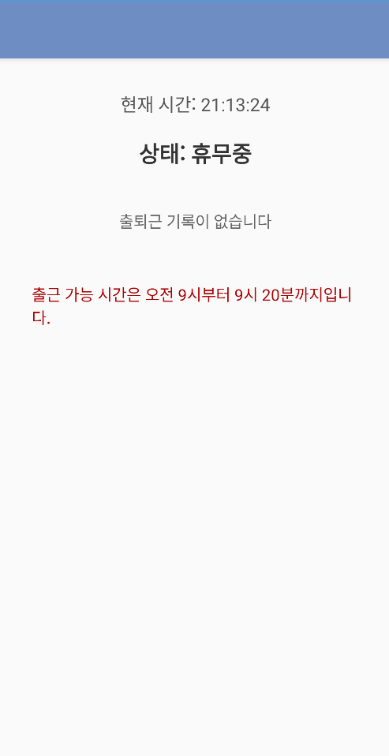
2025년 소프트웨어학과를 졸업을 한 박준혁입니다. 다양한 언어와 도구를 활용해 실제 프로젝트를 수행하며 실무 역량을 쌓아왔습니다.
C: 자료구조·알고리즘 구현 경험
Java: 전기차 충전소 앱 개발,사내앱 개발, Firebase 연동, UI 구현
Python: 데이터 분석 기초 및 스크립트 작성
R: 데이터 분석 및 R-MySQL 기반 챗봇 구현
MySQL: 데이터베이스 설계 및 쿼리 작성
R과 연계하여 챗봇 시스템 개발 경험 보유
Android Studio: 앱 개발 및 UI/UX 구현
Firebase: 실시간 DB, 사용자 인증
Git: 협업 및 버전 관리 경험
자동화 툴: 테스트 효율성 향상 경험
Jira: 테스트 효율성 향상 경험
linux_Ubuntu: 각종 테스트 장비 구현 경험
EVE는 전기차 사용자를 위한 실시간 충전소 위치 기반 서비스 앱으로, 직관적인 UI와 커뮤니티 기능을 결합해 편리한 EV 생활을 지원합니다.
각 기능이 어떻게 동작하는지 실제 구현 코드 없이도 시각적으로 이해할 수 있도록 설명합니다.
본 앱은 직관적인 디자인과 Navigation Drawer를 기반으로 구성되어 있어 사용자들이 홈, 커뮤니티, 마이페이지 등 주요 메뉴에 빠르게 접근할 수 있도록 설계되었습니다.
이러한 구성은 사용자 경험(UX)을 고려한 설계로, 앱의 접근성과 사용 편의성을 높이는 데 큰 역할을 합니다.
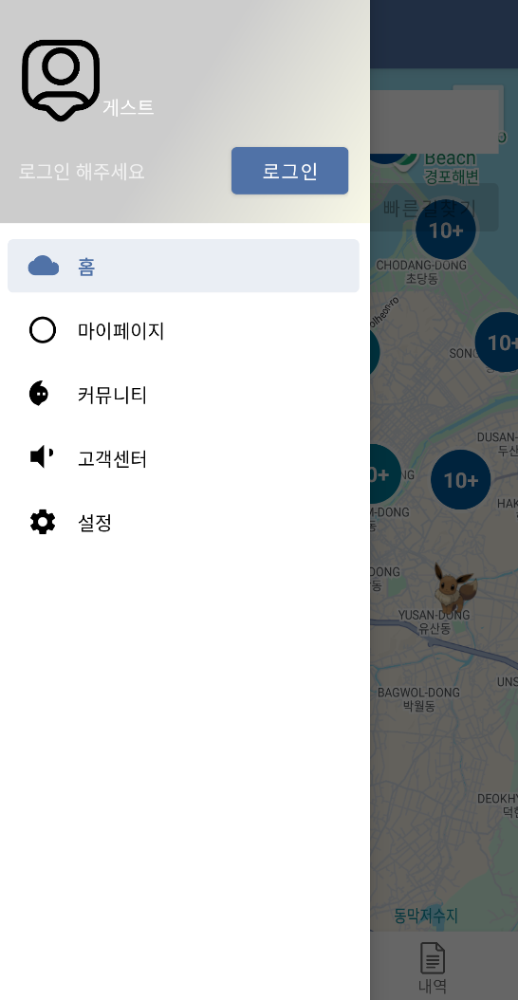
위 이미지는 실제 앱에서 구현된 Navigation Drawer UI를 보여줍니다.
실시간 위치 기반 충전소 정보는 사용자의 현재 위치를 받아와, Firebase에서 제공하는 충전소 데이터를 기준으로 Google Maps에 마커를 표시합니다. 충전소의 사용 가능 여부는 마커 색상으로 구분되며, 원본색은 사용 가능, 회색은 사용 불가능을 의미합니다.
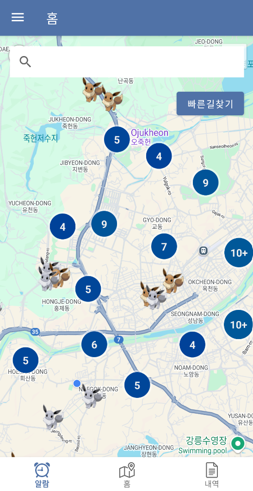
위 이미지는 실제 구현된 실시간 충전소 정보 화면을 보여줍니다. 사용자의 위치에 따라 가까운 충전소가 마커로 표시되며, 마커 색상으로 충전소의 상태를 쉽게 확인할 수 있습니다.
이러한 기능을 통해 사용자는 한눈에 주변 충전소 정보를 파악하고, 원하는 충전소를 빠르게 선택해 이용할 수 있습니다.
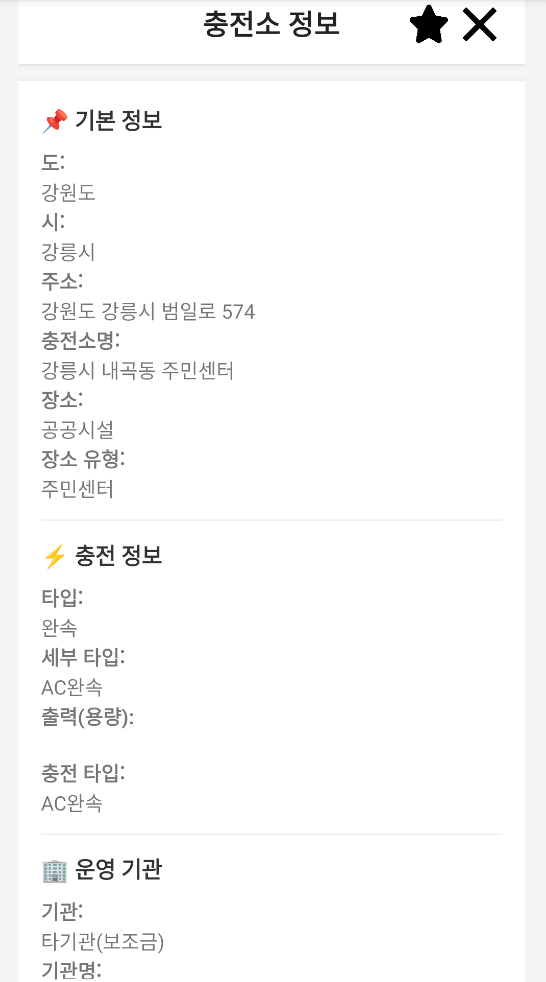
위 이미지는 충전소의 마커를 클릭했을 때 제공되는 상세 정보를 보여줍니다. 운영 시간, 충전기 타입 등을 확인할 수 있습니다.
본 앱은 질문, 자유게시판, 리뷰, 공지사항 등 다양한 카테고리로 구성된 소통 공간을 제공합니다.
이러한 소통 기능은 단순한 게시판을 넘어, 사용자 간 정보 교류 및 커뮤니티 형성에 기여합니다.
더불어, 정기적인 정보 공유는 사용자 참여도를 높이고, 결과적으로 앱의 이용 시간과 사용 빈도 증가로 이어집니다.
소통 기능의 기본적인 개발 부분은 직접 구현한 기능으로, 다른 팀원과의 협업을 통해 더 나은 사용자 경험을 제공할 수 있었습니다.
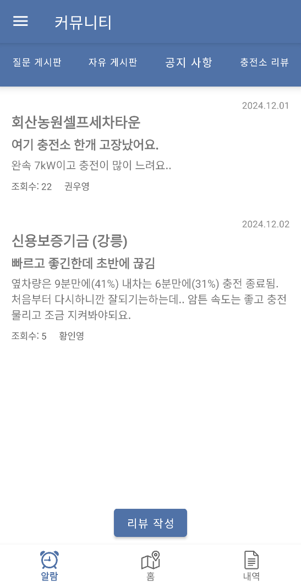
위 이미지는 커뮤니티 게시판을 보여주는 화면입니다. 질문, 자유게시판, 리뷰 등으로 구성되어 사용자의 활발한 소통이 가능합니다.
본 앱은 사용자의 편의성을 높이기 위한 다양한 개인화 기능을 제공합니다.
특히 ‘내 정보 수정’과 ‘즐겨찾기’ 기능은 직접 개발한 부분으로, 사용자 중심의 인터페이스와 데이터 처리 로직을 구현하여 개인화 경험을 강화했습니다.
이러한 기능들은 사용자에게 앱 사용의 주도권을 부여하고, 자연스럽게 앱 만족도와 재사용률 향상으로 이어집니다.
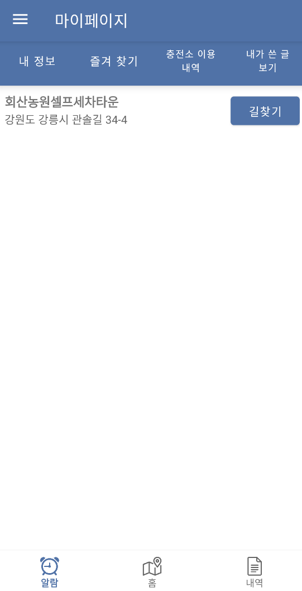
위 이미지는 마이페이지에서 개인화된 정보를 확인하고 수정정할 수 있는 화면입니다. 사용자의 편의성을 높여주는 다양한 기능이 포함되어 있습니다.
본 앱은 카카오톡 플러스친구 상담 연결과 FAQ(Q&A) 데이터베이스 연동을 통해, 사용자가 자주 묻는 질문에 대한 답변을 빠르게 찾고 필요시 실시간 상담까지 받을 수 있도록 지원합니다.
위 기능은 단순한 정보 제공을 넘어, 고객 지원의 자동화 및 접근성 향상에 초점을 맞추어 개발되었습니다.
이를 통해 사용자 문의 대응 속도를 높이고, 고객 만족도와 신뢰도를 함께 향상시킬 수 있었습니다.
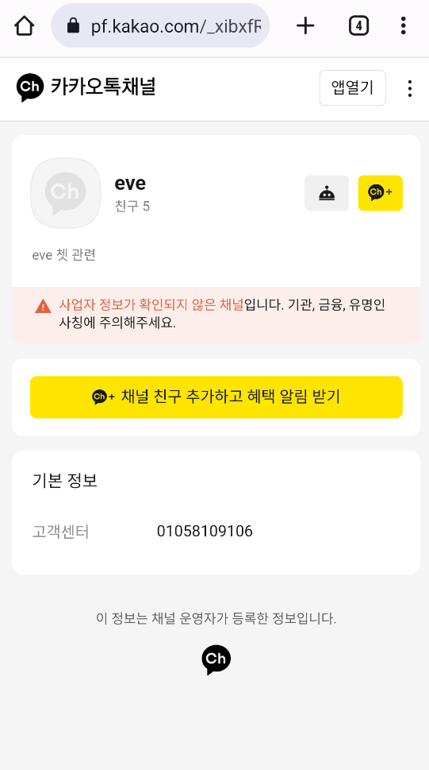
위 이미지는 고객센터와의 실시간 상담 화면입니다. 사용자는 카카오톡을 통해 빠르게 문의하고 도움을 받을 수 있습니다.
본 앱은 Firebase 기반의 관리자 로그인 기능과 함께, 충전소 데이터 관리, 게시글 모니터링, 사용자 정보 확인이 가능한 백오피스 기능을 제공합니다.
위 기능은 직접 개발한 관리자용 기능으로,
Firebase Realtime Database 및 Firestore를 활용해 데이터 연동과 UI 설계를 구현했습니다.
이를 통해 관리자는 앱을 보다 효율적이고 체계적으로 운영할 수 있으며, 서비스 품질 관리에도 용이합니다.
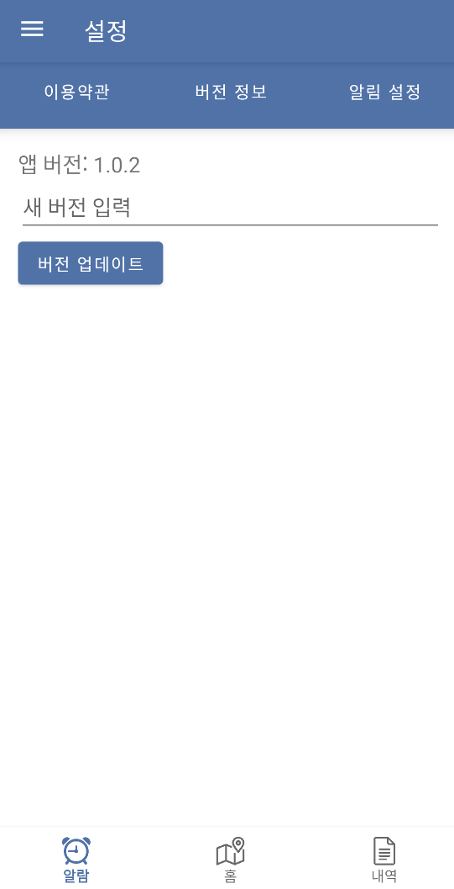
위 이미지는 관리자 계정 앱 화면 입니다. 관리자는 시스템을 통해 게시글 관리, 버전수정 등을 통해 효율적으로 관리할 수 있습니다.
본 앱의 설정 화면에서는 앱 버전 확인, 이용 약관, 타이머 및 알람 기능 등을 제공하여 사용자가 앱을 더 효율적으로 관리하고 사용할 수 있도록 설계되었습니다.
이 기능들은 직접 개발한 설정 화면으로, 사용자가 앱을 더욱 효율적이고 편리하게 관리할 수 있도록 돕습니다.
특히, 타이머 및 알람 기능은 충전소 이용 시 사용자 편의성을 극대화하며, 앱을 더욱 직관적으로 만들어 사용자의 만족도를 높였습니다.
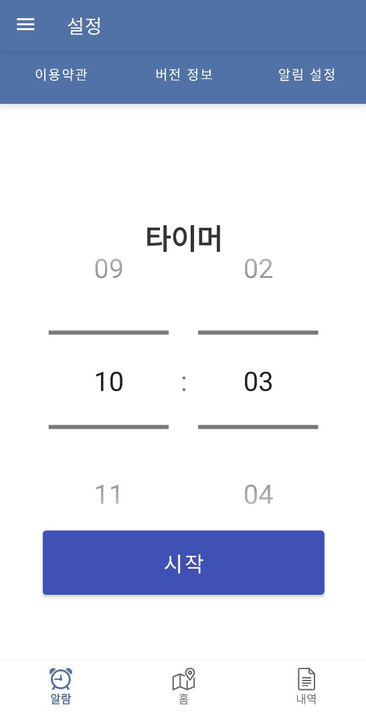

사내 통합 관리 앱은 출퇴근 기록, 일정, 전자결재, 커뮤니케이션 기능 등을 통합하여 효율적인 업무 환경을 제공하는 올인원 모바일 솔루션입니다.
사내 통합 관리 앱은 사용자의 편의성과 생산성을 높이기 위해 세부 기능들을 직관적으로 설계하였습니다.
아래에서 각 핵심 기능들의 UX 흐름과 구현 목적을 확인해보세요.
출퇴근 기능은 정확한 근무 시간 관리를 위해 특정 시간대에만 출근 버튼이 활성화되고, 퇴근 시 자동 상태 변경 기능이 포함되어 있습니다.
근무중, 퇴근 시 휴무중으로 자동 변경
사내 구성원들의 편의를 위해 식단 정보를 요일별로 제공합니다. 각 식사는 조식/중식/석식으로 구분되며, 날짜 선택 시 해당 식단을 빠르게 확인할 수 있습니다.
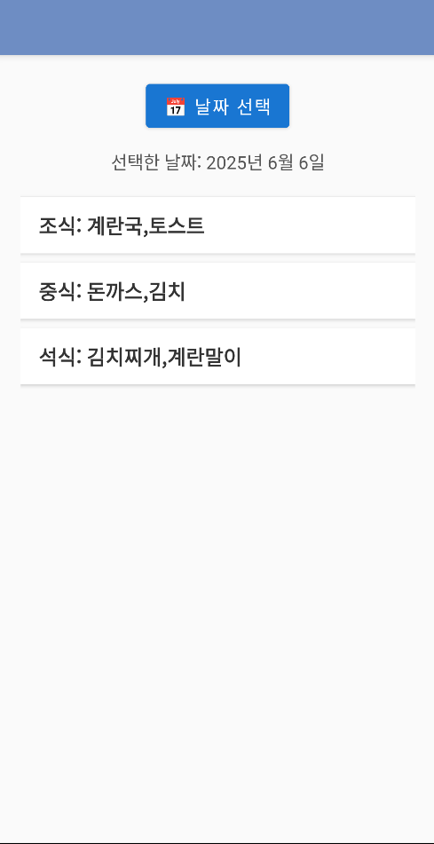
사내 소통을 강화하기 위해 다양한 게시판을 운영합니다. 구성원들은 게시글 작성, 조회, 수정, 삭제 등 기능을 통해 활발한 커뮤니케이션이 가능합니다.
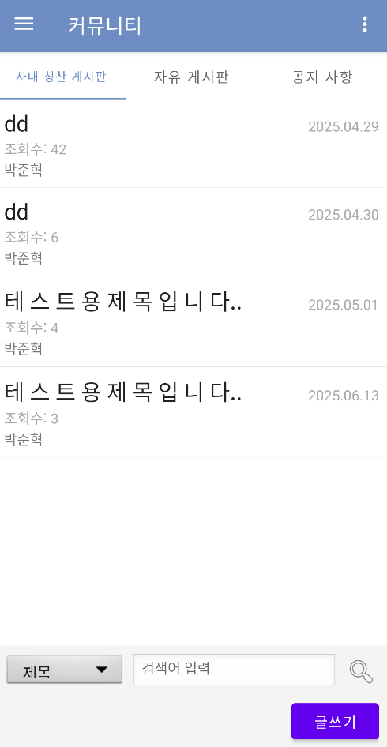
부서 단위의 실시간 소통을 위한 전용 채팅방이 제공됩니다. 같은 부서의 구성원만 입장 가능하며, Firebase를 기반으로 실시간 대화를 지원합니다.
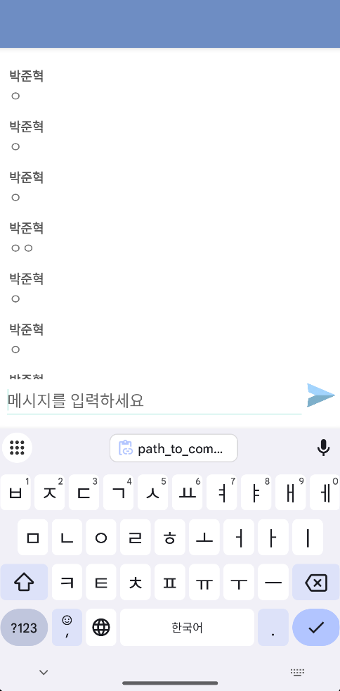
사원 정보를 열람할 수 있으며, 친구 추가 및 카카오톡 연동으로 빠르게 커뮤니케이션할 수 있습니다.
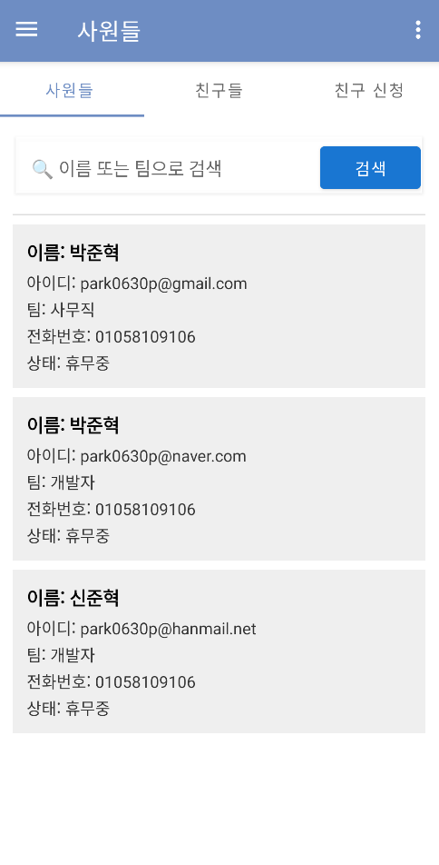
개인 및 팀 단위 일정을 등록, 확인, 필터링할 수 있는 기능을 제공합니다. 공휴일은 자동으로 색상 표시됩니다.
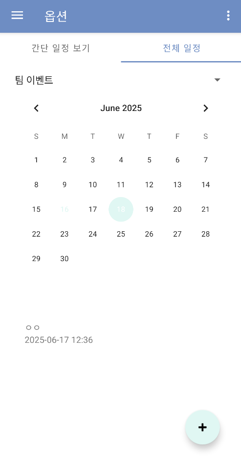
연차, 반차, 병가, 출장 등의 신청과 승인을 전자적으로 처리하는 기능입니다.
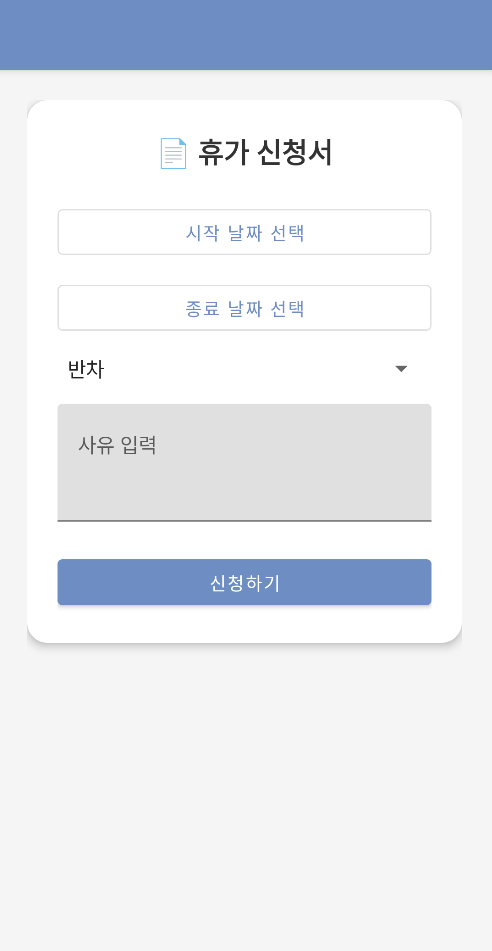
Gmail API를 연동하여, 앱 내에서 메일을 주고받고 회신할 수 있습니다.
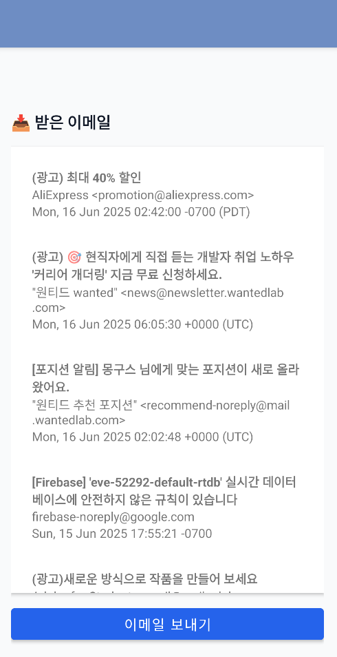
사용자 정보를 편집하고, 내 게시글 확인, 개인 명함 생성이 가능합니다.
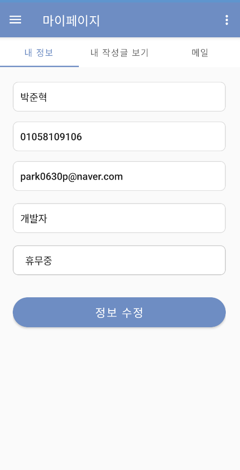
각 프로젝트에서 얻은 주요 성과를 소개합니다.
실사용자 대상 베타 테스트를 진행하여 12건의 UX/UI 피드백을 반영(예: 타이머 설정, 지도 확대 위치 조정).
기능적 한계를 분석하고 실시간 거리 기반 추천 기능을 구현하여 지도 기반 UX를 개선함.
검색 트래픽 문제를 해결하고 서버 응답 속도를 20% 개선하여 동시 검색 시 로딩 시간 단축.
다양한 사용자 요구 사항을 분석하고 효율적인 정보 구조 설계로 직관적인 홈 화면 구현.
중복 퀴리 제거 ,앱 내 채팅 반응속도 25%개선, GMAIL 연동.
저는 제품의 품질을 책임지는 QA 엔지니어로 성장하기 위해 단기, 중기, 장기 목표를 설정하고 체계적으로 역량을 발전시키고 있습니다.
기본적인 QA 역량과 테스트 프로세스 이해에 집중합니다.
제품 품질을 주도적으로 관리하는 QA 엔지니어로 성장합니다.
조직의 품질 문화를 이끄는 QA 전문가를 목표로 합니다.
변화하는 환경에 대응하기 위해 지속적으로 학습합니다.
저는 항상 새로운 기회와 도전을 찾고 있습니다. 프로젝트나 협업, 채용 기회에 대해 논의하고 싶다면 언제든지 연락주세요. 저는 귀사의 목표를 함께 이룰 수 있는 열정과 전문성을 가지고 있습니다.
Address
인천시 경원대로 119번길 21 풍림2차 101동 904호
Phone
Working Hours
Mon-Fri 9.00 AM to 5.00PM.